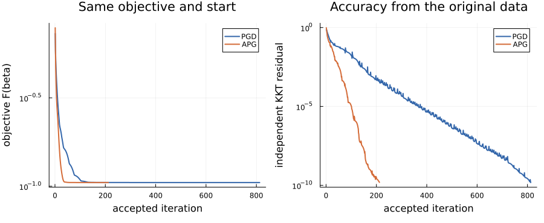

Acceleration
Prerequisites: proximal gradient descent.
After this chapter you can:
- Describe how momentum uses two previous iterates.
- State the assumptions behind the textbook accelerated objective rate.
- Compare package PGD and APG using both objective traces and independent KKT residuals.
Look ahead before taking the proximal step
When a gradient method makes many small moves in a consistent direction, previous iterates provide useful information about where to look next. An accelerated proximal method forms an extrapolated point
\[z^k=\beta^k+\omega_k(\beta^k-\beta^{k-1})\]
and takes the proximal-gradient step from that point:
\[\beta^{k+1}=\operatorname{prox}_{\gamma g} \bigl(z^k-\gamma\nabla f(z^k)\bigr).\]
The choice of omega_k matters. In classical FISTA, a sequence t starts at t_1 = 1, with t_{k+1} = (1 + sqrt(1 + 4t_k^2))/2 and extrapolation weight (t_k-1)/t_{k+1} in the corresponding indexing. For a convex smooth loss with an L-Lipschitz gradient, a proper closed convex penalty, an existing minimizer and fixed step gamma = 1/L, the exact-arithmetic objective error obeys
\[F(\beta^k)-F^*\le \frac{2L\|\beta^0-\beta^*\|_2^2}{(k+1)^2}.\]
See Beck and Teboulle, A Fast Iterative Shrinkage-Thresholding Algorithm for Linear Inverse Problems, Theorem 4.4. This is an objective-error guarantee for the stated algorithm and assumptions. It does not imply a fixed speedup in seconds, a coefficient-error bound, or an identical theorem for every modified momentum and restart scheme.
Why restarting can help
An extrapolated point can move beyond a useful region. Classical acceleration need not reduce the objective at every step, even though its overall theoretical bound is faster. A restart discards momentum information that is no longer helpful and resumes from an accepted point.
The package's AccProxGradDescent uses its own extrapolation, objective-based restart and bound test; the APG contract is the authoritative statement. Its stopping rules and results are shared with the proximal-gradient interface. The experiment below compares those two actual implementations; it does not implement the classical FISTA recurrence above.
A correlated regression problem
We reuse the seeded design from the lasso example: neighboring columns are strongly correlated. Correlation makes some directions in coefficient space easier to change than others, which can make a basic full-gradient method progress slowly. The same design, penalty and starting point are used for both solves.
using LinearAlgebra, Random, ProximalBase, ProximalSolvers, Plots
rng = Xoshiro(2026)
n, p = 200, 50
X = randn(rng, n, p)
for j in 2:p
X[:, j] .= 0.9 .* X[:, j-1] .+ sqrt(1-0.9^2) .* X[:, j]
end
y = X[:, 1:5] * [2.0, -1.5, 1.0, 0.5, -0.5] + 0.1 * randn(rng, n)
s, lambda = 1 / n, 0.02
loss, penalty = s * LeastSquaresLoss(y, X), NormL1(lambda)
options = ProximalOptions(maxiter=4000, ftol=1e-14, xtol=1e-12,
gradtol=1e-10, allow_f_increases=true, store_trace=true, extended_trace=true)
beta_pgd, beta_apg = zeros(p), zeros(p)
pgd = solve!(beta_pgd, loss, penalty, ProximalGradientDescent(), options)
apg = solve!(beta_apg, loss, penalty, AccProxGradDescent(), options)
function independent_kkt(beta)
gradient = s * X' * (X * beta - y)
maximum(iszero(beta[j]) ? max(abs(gradient[j])-lambda, 0.0) :
abs(gradient[j]+lambda*sign(beta[j])) for j in eachindex(beta))
end
@assert independent_kkt(beta_pgd) < 1e-6
@assert independent_kkt(beta_apg) < 1e-6
[(method=name, iterations=result.iterations, gradient_calls=result.grad_calls,
kkt=independent_kkt(beta), converged=result.converged)
for (name, result, beta) in (("PGD", pgd, beta_pgd), ("APG", apg, beta_apg))]2-element Vector{@NamedTuple{method::String, iterations::Int64, gradient_calls::Int64, kkt::Float64, converged::Bool}}:
(method = "PGD", iterations = 813, gradient_calls = 821, kkt = 1.4956247004760392e-10, converged = 1)
(method = "APG", iterations = 212, gradient_calls = 287, kkt = 1.5327038249690617e-10, converged = 1)The stored iterates let us evaluate a diagnostic independently of the solver's internal residual. Trace storage is specified in the iteration contract.
objective_plot = plot(; xlabel="accepted iteration", ylabel="objective F(beta)",
title="Same objective and start", yscale=:log10)
residual_plot = plot(; xlabel="accepted iteration", ylabel="independent KKT residual",
title="Accuracy from the original data", yscale=:log10)
for (name, result, color) in (("PGD", pgd, "#3366aa"), ("APG", apg, "#d46b38"))
iterations = [state.iteration for state in result.trace]
objectives = [state.fg_x for state in result.trace]
residuals = [independent_kkt(state.metadata["x"]) for state in result.trace]
plot!(objective_plot, iterations, objectives; label=name, color=color, linewidth=2)
plot!(residual_plot, iterations, max.(residuals, 1e-14);
label=name, color=color, linewidth=2)
end
comparison = plot(objective_plot, residual_plot; layout=(1, 2), size=(900, 370))
savefig(comparison, "acceleration-comparison.svg")
The plotting floor 1e-14 is used only to draw the logarithmic residual axis; the table and assertions use the unfloored values. An iteration may require multiple line-search trials, so iteration counts alone are not a timing benchmark. For a comparison at independently matched accuracy, see the solver-comparison example.
Exercises
- What happens to the accelerated update when
omega_k = 0? - Why can a method with a better worst-case objective rate take more time on a small problem?
- Coding: change the column correlation from
0.9to0and repeat bothsolve!calls. Compare independent accuracy, iterations and gradient calls. - Coding: vary
lambdawhile holdingXandyfixed. Does the advantage of acceleration remain the same? Explain why one experiment cannot prove which method is fastest for all lasso problems.
Exercise answers
- The extrapolated point is the current iterate, yielding a proximal-gradient step with the same local step rule.
- Constants, matrix sizes, line-search trials, stopping thresholds and memory costs matter. A theorem about asymptotic objective error is not a runtime model for one implementation.
- The result is empirical: record it rather than expecting a fixed winner. Use KKT residuals to ensure both methods reached comparable accuracy.
- The active coefficients and local geometry can change with the penalty. Conclusions should be limited to the tested designs and accuracy targets.
Continue to coordinate descent, an alternative that updates one coordinate or group at a time.